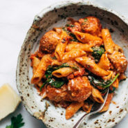

- Prep Time: 10 mins
- Cook Time: 45 mins
- Yield: 6 servings
DESCRIPTION
Baked Penne with Meatballs! No-boil, fail-proof, garlic-buttery, easy dreamy weeknight dinner. SO GOOD!
INGREDIENTS
Baked Penne:
- 8 ounces
- 1 28-ounce can
- 2 cups
- 1/2 cup
- 3 cloves
- 1 teaspoon
- 1 teaspoon
- 2 teaspoons
- 1-2 teaspoons
- meatballs
At the end:
- a few handfuls of grated parmesean
INSTRUCTIONS
- Preheat oven to 400 degrees.
- Mix all of the baked penne ingredients together in a 9×13 baking dish. Cover tightly with foil (double layer isn’t a bad idea).
- Bake for 35-40 minutes.
- Remove foil (HOT HOT HOT) and give it a stir. Add spinach and top with Parm, and brown it up for 3-5 minutes under the broiler. Let it stand for a few minutes so the sauce has a chance to thicken up. Voila!